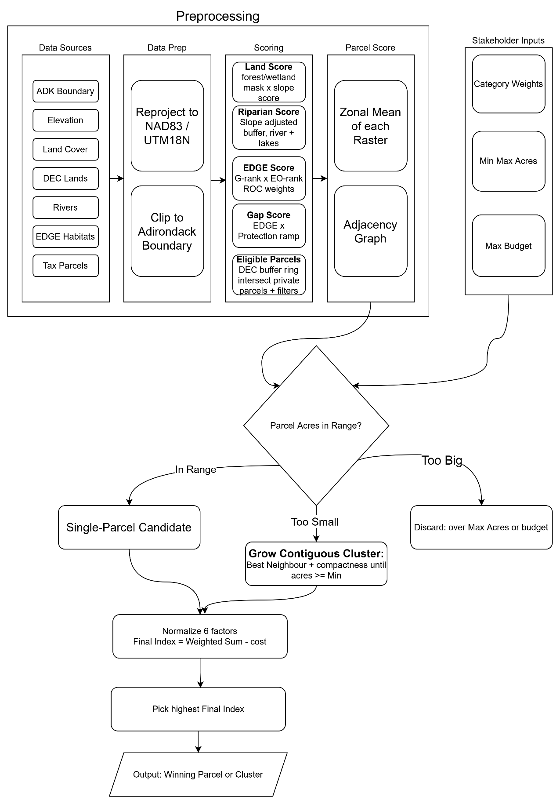

2 500 ACRES DANS LES ADIRONDACKS
En 2025, les électeurs de New York ont adopté un amendement constitutionnel obligeant l'État à acquérir 2 500 acres de terres « de valeur égale ou supérieure » pour compenser les terres prélevées sur la Forest Preserve. L'amendement n'a jamais défini la valeur — j'ai donc construit un système qui le fait, et qui recommande quelles parcelles acheter selon les priorités de différentes parties prenantes.
LE PROBLÈME
L'amendement a autorisé rétroactivement des pistes de ski et de biathlon construites sur 323 acres de la Forest Preserve protégée des Adirondacks, et exige en contrepartie que New York ajoute 2 500 nouveaux acres d'une valeur écologique comparable. Mais la « valeur » est subjective : un groupe de conservation, le gestionnaire des terres de l'État et un contribuable classeront chacun les parcelles candidates différemment. L'outil rend ces priorités explicites et montre comment l'acquisition recommandée évolue à mesure qu'elles changent.
Chaque résultat correspond à la parcelle la mieux classée — ou, lorsqu'aucune parcelle unique n'atteint la superficie cible, à un groupe contigu que le modèle constitue en absorbant les parcelles voisines les mieux notées tout en conservant une forme compacte. Les dix profils s'appuient tous sur les mêmes scores de parcelles ; seule la pondération diffère.
FONCTIONNEMENT
Le modèle s'exécute en deux temps. Une étape de prétraitement, réalisée une seule fois, attribue à chaque cellule de 30 mètres des Adirondacks un score selon quatre facteurs écologiques — l'aptitude du couvert végétal et de la pente, la proximité riveraine, la valeur d'habitat rare (EDGE) et la valeur de lacune de protection — puis résume chaque facteur à l'échelle des parcelles candidates sous forme de moyenne par acre. Ensuite, pour un profil de partie prenante donné, ces scores de facteurs, ainsi que la taille et le coût de la parcelle, sont normalisés et combinés en un indice pondéré unique ; la parcelle ou le groupe constitué au score le plus élevé l'emporte.
Conserver les scores écologiques sous forme de moyennes par acre (plutôt que de totaux) est ce qui permet aux six critères de rester indépendants — une grande et une petite parcelle de qualité d'habitat égale obtiennent le même score, et seule la pondération explicite de la taille récompense l'ampleur.

Pipeline complet : le prétraitement (exécuté une seule fois) alimente une étape rapide de classement et de regroupement par profil de partie prenante.
CE QUE MONTRENT LES RÉSULTATS
Les dix profils ci-dessus retracent l'ensemble des compromis. Un profil budgétaire, qui minimise le coût sous une contrainte financière serrée, se fixe sur une seule parcelle abordable à Hopkinton ; un profil biodiversité constitue un groupe compact et de plus grande valeur d'habitat rare à Parishville ; et les profils axés sur l'eau déplacent la recommandation vers Long Lake, à proximité des rivières et des lacs. Comme le modèle applique le plafond de dépenses de chaque profil comme une limite stricte et ne forme un groupe contigu que lorsqu'une seule parcelle est trop petite, chaque résultat reste à la fois abordable et gérable en tant qu'acquisition unique et connectée.
ANCRAGE DANS LA LITTÉRATURE
La structure de normalisation puis de pondération suit Li & Nigh (2011) ; la courbe continue d'aptitude à la pente suit Store & Kangas (2001) ; les zones tampons riveraines suivent Wenger (1999) et les règles de rivage de l'Adirondack Park Agency ; les rangs d'habitats rares sont cardinalisés à l'aide des poids de centroïde de rang (Rank-Order-Centroid, Barron & Barrett 1996) ; et la croissance des groupes compacts s'inspire de la logique de longueur de bordure de Marxan (Watts et al. 2009).